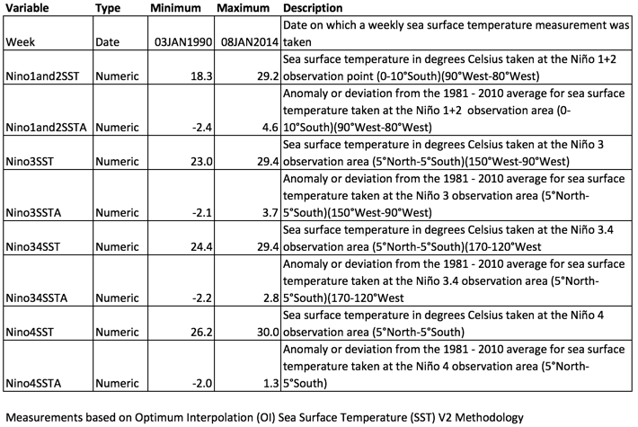
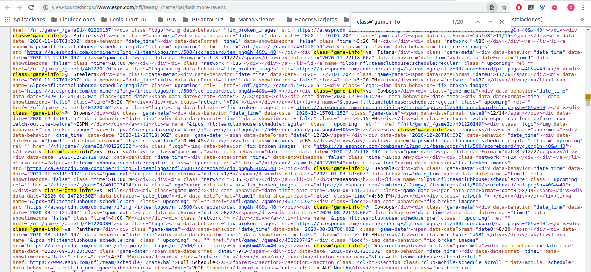

read.table() and read.csv()
functions.xlsx package’s functions.
read.xlsx()
function.write.xlsx() function in this package.read.xlsx2() and the write.xlsx2()
functions.XLConnect package.XML files
with XML package’s functions.
xmlValue() function.xmlSApply().XPath language and the
xpathSApply() function.
XML.toJSON() {jsonlite package}.
data.table package.
data.table() function.tables() function.operator :=.Assignment operator
also works by reference with data.table objects.
Caution when having multiple references to the same object. How to make
a real copy of a data.table: the copy()
function.plyr like operations, the by
parameter..N (dot N)setkey()
function.
fread() against read.table()).This course covers the basic ideas behind getting our data ready to actually perform a data analysis on it.
So we’ll be dealing with the nitty-gritty of:
Finding the raw data in whatever form they are, whether they’re in a database or whether they’re in a row image file or something else.
Extracting that data out.
Then it’s also concerned with tidy data principles.
It also covers practical implementation through a range of R packages and we’ll be covering a big range of R packages.
FASTQ format is a text-based format for storing both a biological sequence (usually nucleotide sequence) and its corresponding quality scores.
In a FASTQ file we might be interested in actually extracting only a sequence of information from one line or from each separate line of the file.
To do so, we actually have to parse the raw text file and extract out the bits that we actually care about.
And so one of the steps in getting data is actually getting into these raw files, figuring out their structure and being able to extract the relevant bits.
Another thing that might happen is that we might get data that’s actually quite neatly structured, for example, data from an API.
It’s actually data that’s formatted in JSON format. And JSON formatted data is actually quite neat and organized and very easy to distribute, but it’s very hard to actually use to do downstream analyses in many programming languages.
So you might want to reorganize that data in such a way that it’s easy to analyze and do things with.
In general we can try to get some information off of a website, through get requests. For example:
We might also have situations where we have instructions within a text, like take one tablet by mouth and take one-half tablet with grapefruit juice.
These are actually free-text instructions that we might want to be able to get and extract out, a little piece of that information -say how many tablets have they been instructed to take-, in order to categorize it by each record that we are collecting.
For example, MySQL and MongoDB are two very popular free databases where data might be stored.
And we might want to be able to go into a database, collect some of that data in its raw form and then process it in such a way that:
Data analysis is only one step, an important one but not the only, in the hole data processing pipline.
raw data -> processing script -> tidy data -> data analysis -> data communication
The early stage where we actually go from raw data to tidy data, turns out to be one of the more important components in any kind of environment where the data aren’t necessarily already pre-tidy for us.
We want to know how to actually get at the raw data itself, so that we can do the cleaning ourselves, so we understand the principles of what’s going on.
That’s what this course is all about.
“Data are values of qualitative or quantitative variables, belonging to a set of items”.
A characteristic of an item being measured.
Two kinds of variables depending on the terms in which variables are measured:
We’ll se later in detail how to code variables, when referring to the code book.
A lot of these measurements are actually derived from much lower level measurements.
For example, if we think about blood pressure, it’s actually measured by calculating a pressure measurement. And there’s actually a lot of low level things that go into calculating that pressure measurement.
So those low level things are the kinds of things that we’re going to be talking about in raw versus processed data.
Raw data are the original source of the data.
Processed data is data that is ready for analysis.
Raw data is often hard to use for data analyses.
Data analysis includes the processing or the cleaning of the data.
If we obtain a dataset that’s actually a raw image file and we process it, and turn it into a nice data frame that then we use to analyze an ARM, that data processing actually is part of the data analysis, our data science pipeline.
In fact a huge component of a data scientist’s job is performing those sorts of processing operations.
Raw data may only need to be processed once.
Processing can include merging, subsetting, transforming, go into a file and extract out a part of an image, go into a file and extract out a little bit of a text from preformed text field, etc.
There may be standards for processing, depending on the field we are working in.
All steps should be recorded.
This is a critical component.
Regardless of how often we process raw data, we need to keep a record of all the different things we did, because it can have a major impact on the data stream analysis.
Preprocessing often ends up being the most important component of a data analysis in terms of effects on the downstream data. So paying attention to all the steps that we did is critically important if we’re going to be a data scientist who’s careful about understanding what’s really happening in the entire data processing pipeline.
Let’s take the example of sequencing DNA.
Sequencing DNA processing pipeline example
So the process of sequencing with a modern machine starts with little fragments of DNA which are bound to a slide.
Then there’s a chemical process by which multiple copies of that same sequence are made.
What ends up happening is that this process is performed through sequencing by synthesis.
Those colors create a series of images. And so, for example, when we’re synthesizing the first nucleotide we might get the image we see in the picture above. Then the image at the second one and the image at the third one and so forth.
If we zoom in on one specific little dot, that corresponds to the sequence of exactly one of the little clusters of sequences that are exactly the same.
And so we can follow along from image to image, we can see what the color is in each image and, for each image, we end up with the color corresponding to each letter, whichever one is the brightest is the one that we assign to that sequence. That’s how we get the profiles for each fragment.
So for example, the very first letter for the first profile is going to be a C, because we can see that, of the four letters, the C is actually the highest.
And then in the second nucleotide, we can actually see that the highest letter out of the four letters, or the most bright letter, is the G. And so the next letter that we’d assign would be a G and so forth.
So, the final thing that we end up with is something like the FASTQ file we can see in the picture, the so called reads.
In summary: we can think about the raw data being in several different steps.
Therefore it’s critical to understand what those processing steps are so we can make sure that our analysis isn’t being driven by artifacts caused by the way that we went from the raw data to the tidy data.
So that’s what getting data is all about, is taking raw data and turning it into processed data.
The soruces where this topic was taken from are the video lessons from Coursera and this Jet Leek GitHub repository.
We should have four things when we finish going from row data set to a tidy data set (which we can then use to do downstream analysis -regression modeling or prediction end machine learning-).
The raw data.
A code book describing each variable and its values in the tidy data set.
An explicit and exact recipe we used to go from 1 -> 2,3.
It’s important to remember that there are, as we saw, different levels of row data.
It is critical that we include the files that we are actually extracting information from, that is, the files containing the rawest form of the data that we have access to.
Here are some examples of the raw form of data:
The strange binary file our measurement machine spits out.
The unformatted Excel file with 10 worksheets the company we contracted with sent us.
The complicated JSON data we got from scraping the Twitter API.
The hand-entered numbers we collected looking through a microscope.
We know the raw data is in the right format if it is unadulterated, that is to say, if we:
The tidy data is the target or the end goal of the whole process.
The general principles of tidy data are laid out by Hadley Wickham in this paper and this video.
While both the paper and the video describe tidy data using R, the principles are more generally applicable. The idea is end up having data where:
Each variable we measure should be in one column.
Each different observation of that variable should be in a different row.
There should be one table/spreadsheet for each “kind” of variable.
If we have multiple tables, they should
include a column in the table that allows them to be
linked (this is often an id that is used to join or merge
data sets).
While these are the hard and fast rules, there are a number of other things that will make our dataset much easier to handle.
AgeAtDiagnosis instead of something
like ADx or another abbreviation that may be hard for
another person to understand.Here is an example of how this would work from genomics.
Suppose that for 20 people, we have collected:
We would have one table/spreadsheet that contains the clinical/demographic information.
We would also have one table/spreadsheet for the summarized genomic data. Usually this type of data is summarized at the level of the number of counts per exon. Suppose we have 100,000 exons, then this table would have:
It’s also often called the metadata, because the code book has data that sorrunds the data, explaining what the data is trying to say.
For almost any data set, the measurements we calculate will need to be described in more detail than we can or should sneak into the spreadsheet.
The code book, at minimum, should contain:
A common format for this document is a Word or text file.
Usually, there is a section called “Code book” that describes each variable and its units.
And there should be a section called “Study design” that has a thorough description of how we collected the data:
When we put variables into a spreadsheet there are several main categories we will run into depending on their data type:
Continuous variables are anything measured on a quantitative scale that could be any fractional number.
Ordinal data are data that have a fixed, small (< 100) number of levels but are ordered.
Categorical data are data where there are multiple categories, but they aren’t ordered.
Missing data are data that are unobserved and we don’t know the mechanism.
NA.Censored data are data where we know the missingness mechanism on some level.
NA when we don’t have the
data.TRUE if censored and FALSE if
not.General advice: always encode every
piece of information about our observations using
text.
For example, if we are storing data in Excel and use a form of colored
text or cell background formatting to indicate information about an
observation (“red variable entries were observed in experiment 1.”) then
this information will not be exported (and will be lost!) when the data
is exported as raw text.
Every piece of data should be encoded as actual text that can be
exported.
In our genomics example, the code book should contain the unit of measurement for each clinical/demographic variable (age in years, treatment by name/dose, level of diagnosis and how heterogeneous).
Also, how we picked the exons we used for summarizing the genomic data (UCSC/Ensembl, etc.).
And any other information about how we did the data collection/study design.
Here it’s an interesting code book example from the NOAA website regarding a Sea Surface Temperature (SST) dataset - website link.

As we know, reproducibility is critical in computational science.
That means, when we submit our paper, the reviewers and the rest of the world should be able to exactly replicate the analyses from raw data all the way to final results.
In other words, even if we collected all that information and we made it available in the certain terms of the tidy data, we should be able to go back to the raw data and re-process it and get the same tidy data set.
So the ideal thing to do is to create a computer
script (in R, Python, or something
else) that will do this for us. This script should:
We can try running our script a couple of times and see if the code produces the same output.
In some cases it will not be possible to script every step, In that case, we should provide a pseudocode written in a text file, that should look something like this:
We should also include information about which system (Mac/Windows/Linux) we used the software on and whether we tried it more than once to confirm it gave the same results.
Ideally, we will run this by a fellow student/labmate to confirm that they can obtain the same output file we did.
This is the era of Internet, so we’re probably going to be downloading a lot of our data from the Internet.
Why do we want to use R to download files as opposed to pointing and clicking?
So, first we set as always our working directory.
setwd()
command and the two kinds of paths we can pass to it:
setwd("./workingdir"),
setwd("../"), etc.setwd("/Users/chris/workingdir)"(on Windows we need two
back slashes).file.exists() and dir.create().Normally we’ll want to create a directory and put there the data we want to collect.
Again, we recall that there are two functions that we can use for this task.
file.exists()
dir.exists(), which only takes a
directory path.dir.create()
So usually we’ll proceed creating our data directory checking first if it doesn’t exists yet.
if (!file.exists("3_data")) { # we are already in our working dir, no need to specify path.
dir.create("3_data")
}download.file() function.This is function is the main way through wich we can get data from the Internet, especially when we are talking about files:
str(download.file)
function (url, destfile, method, quiet = FALSE, mode = "w", cacheOK = TRUE,
extra = getOption("download.file.extra"), headers = NULL, ...) url parameter is the place that we’re going to be
getting the data from.destfile is the destination file where that data is
going to go.method also needs to be specified, particularly when
dealing with https, as we’ll see in the following example.As an example, we’re going to be using the Baltimore fixed camera data.
fileUrl.data directory and we’d like to call it
cameras.csv..csv because that’s the extension that’s
used for comma separated files.method that we’re going to use is
curl.
cameras.csv file.fileUrl <- "https://data.baltimorecity.gov/api/views/dz54-2aru/rows.csv?accessType=DOWNLOAD"
download.file(fileUrl, destfile = "./3_data/cameras.csv", method = "curl")list.files("./3_data")
[1] "acs.csv"
[2] "baltimore_restaurants_dataset.png"
[3] "baltimore_restos.xml"
[4] "Baltimore-Ravens_SourceCode.png"
[5] "baltimore-ravens.html"
[6] "Baltimore-Ravens.png"
[7] "Baltimore-Sun_homicides.png"
[8] "cameras.csv"
[9] "chicago.rds"
[10] "cran.csv"
[11] "disasterLoanProg.xlsx"
[12] "ed-stats.csv"
[13] "employees-schema.png"
[14] "example_processing_pipeline.png"
[15] "failed.csv"
[16] "fixed.for"
[17] "gasprogram.xlsx"
[18] "gdp-rank.csv"
[19] "getdata_data_PUMSDataDict06.pdf"
[20] "GoogleScholar_JeffLeek.png"
[21] "homicides.txt"
[22] "housing.csv"
[23] "Housing.csv"
[24] "Housing2.csv"
[25] "How Netflix Reverse-Engineered Hollywood - The Atlantic_files"
[26] "How Netflix Reverse-Engineered Hollywood - The Atlantic.html"
[27] "jeff.jpg"
[28] "jsonfile_example.png"
[29] "passed.csv"
[30] "restaurants.csv"
[31] "reviews.csv"
[32] "sat.csv"
[33] "simple.xml"
[34] "simpleXML.png"
[35] "solutions.csv"
[36] "sst_codebook.png"
[37] "sst_data.png"
[38] "students.csv"
[39] "students2.csv"
[40] "students3.csv"
[41] "students4.csv"
[42] "ucsc-genome-browser.png" date() function.dateDownloaded <- date()
dateDownloaded
[1] "Sat Feb 18 08:03:15 2023"In summary
method = "curl".read.table() and read.csv()
functions.See “R Programming”, Module 1, paragraph 14.
Just for the sake of completeness, because we have already downloaded
a csv file in the previous section, lets read it with
read.csv().
camerasData <- read.csv("3_data/cameras.csv")
str(camerasData)
'data.frame': 80 obs. of 9 variables:
$ address : Factor w/ 71 levels "E 33RD ST & THE ALAMEDA",..: 17 25 12 71 48 52 35 6 58 8 ...
$ direction : Factor w/ 4 levels "E/B","N/B","S/B",..: 1 4 1 3 3 3 1 4 1 4 ...
$ street : Factor w/ 61 levels "\nPulaski Hwy \n",..: 17 24 9 61 50 31 38 37 5 37 ...
$ crossStreet : Factor w/ 66 levels "33rd St","4th St",..: 60 20 65 25 28 50 38 56 53 66 ...
$ intersection : Factor w/ 74 levels "\nPulaski Hwy \n & Moravia Park Drive",..: 21 29 10 74 62 37 48 42 6 43 ...
$ Location.1 : Factor w/ 76 levels "(39.199913, -76.555977)",..: 54 30 23 76 12 15 29 70 57 71 ...
$ X2010.Census.Neighborhoods : int 252 179 213 37 250 11 141 116 214 132 ...
$ X2010.Census.Wards.Precincts: int 63 108 75 270 178 168 123 271 236 257 ...
$ Zip.Codes : int 27295 13645 27950 14009 27953 27953 27935 14009 14004 14009 ...
head(camerasData)
address direction street
1 GARRISON BLVD & WABASH AVE E/B Garrison \n
2 HILLEN ST & FORREST ST W/B Hillen \n
3 EDMONDSON AVE & N ATHOL AVE E/B Edmonson\n
4 YORK RD & GITTINGS AVE S/B York Rd \n
5 RUSSELL ST & W HAMBURG ST S/B Russell\n
6 S MARTIN LUTHER KING JR BLVD & W PRATT ST S/B MLK Jr. Blvd \n
crossStreet intersection Location.1
1 Wabash Ave Garrison \n & Wabash Ave (39.341209, -76.683117)
2 Forrest St Hillen \n & Forrest St (39.29686, -76.605532)
3 Woodbridge Ave Edmonson\n & Woodbridge Ave (39.293453, -76.689391)
4 Gitting Ave York Rd \n & Gitting Ave (39.370493, -76.609812)
5 Hamburg St Russell\n & Hamburg St (39.279819, -76.623911)
6 Pratt St MLK Jr. Blvd \n & Pratt St (39.286027, -76.627846)
X2010.Census.Neighborhoods X2010.Census.Wards.Precincts Zip.Codes
1 252 63 27295
2 179 108 13645
3 213 75 27950
4 37 270 14009
5 250 178 27953
6 11 168 27953xlsx package’s functions.Some data scientists show a certain snobbery about Excel files. But Excel files are still probably the most widely used format for sharing data.
The problem arises when we’re analyzing data with a scripting language like R, because we need to be able to extract the data out of those files so that we can do downstream analyses and processing on them.
As an example, let us download form Data.gov website, a dataset with statistics stored in an Excel file about the US Small Buisness Administration Disaster Loan Program - here’s the link
.xlsx or
.xls file because those are the extension for Excel
files.if(!file.exists("3_data")) {
dir.create("3_data")
}
fileUrl <- "https://www.sba.gov/sites/default/files/articles/SBA_Disaster_Loan_Data_FY08.xlsx"
download.file(fileUrl, destfile = "./3_data/disasterLoanProg.xlsx")
dateDownloaded <- date()list.files("./3_data")
[1] "acs.csv"
[2] "baltimore_restaurants_dataset.png"
[3] "baltimore_restos.xml"
[4] "Baltimore-Ravens_SourceCode.png"
[5] "baltimore-ravens.html"
[6] "Baltimore-Ravens.png"
[7] "Baltimore-Sun_homicides.png"
[8] "cameras.csv"
[9] "chicago.rds"
[10] "cran.csv"
[11] "disasterLoanProg.xlsx"
[12] "ed-stats.csv"
[13] "employees-schema.png"
[14] "example_processing_pipeline.png"
[15] "failed.csv"
[16] "fixed.for"
[17] "gasprogram.xlsx"
[18] "gdp-rank.csv"
[19] "getdata_data_PUMSDataDict06.pdf"
[20] "GoogleScholar_JeffLeek.png"
[21] "homicides.txt"
[22] "housing.csv"
[23] "Housing.csv"
[24] "Housing2.csv"
[25] "How Netflix Reverse-Engineered Hollywood - The Atlantic_files"
[26] "How Netflix Reverse-Engineered Hollywood - The Atlantic.html"
[27] "jeff.jpg"
[28] "jsonfile_example.png"
[29] "passed.csv"
[30] "restaurants.csv"
[31] "reviews.csv"
[32] "sat.csv"
[33] "simple.xml"
[34] "simpleXML.png"
[35] "solutions.csv"
[36] "sst_codebook.png"
[37] "sst_data.png"
[38] "students.csv"
[39] "students2.csv"
[40] "students3.csv"
[41] "students4.csv"
[42] "ucsc-genome-browser.png" The R library has a useful package for reading Excel
files locally and working with them: the xlsx package.
read.xlsx() function.library(xlsx)
str(read.xlsx)
function (file, sheetIndex, sheetName = NULL, rowIndex = NULL, startRow = NULL,
endRow = NULL, colIndex = NULL, as.data.frame = TRUE, header = TRUE,
colClasses = NA, keepFormulas = FALSE, encoding = "unknown", password = NULL,
...) So let’s read from disk our Excel file, knowing the following circumstances:
disasterLoanProgData <- read.xlsx("./3_data/disasterLoanProg.xlsx", sheetIndex = 4, header = TRUE,
startRow = 5, endRow = 105)
str(disasterLoanProgData)
'data.frame': 100 obs. of 14 variables:
$ SBA.Physical.Declaration.Number : Factor w/ 4 levels "11055","11067",..: 1 1 1 1 1 1 1 1 1 1 ...
$ SBA.EIDL.Declaration.Number : Factor w/ 4 levels "11056","11068",..: 1 1 1 1 1 1 1 1 1 1 ...
$ FEMA.Disaster.Number : Factor w/ 2 levels "1730","1731": 1 1 1 1 1 1 1 1 1 1 ...
$ SBA.Disaster.Number : Factor w/ 4 levels "CA-00074","FL-00028",..: 3 3 3 3 3 3 3 3 3 3 ...
$ Damaged.Property.City.Name : Factor w/ 67 levels "ABILENE","ADKINS",..: 1 1 1 2 12 14 23 25 27 31 ...
$ Damaged.Property.Zip.Code : Factor w/ 92 levels "33441","77004",..: 40 41 42 23 21 5 37 22 2 6 ...
$ Damaged.Property.County.Parish.Name: Factor w/ 14 levels "BEXAR","BROWARD",..: 7 14 14 1 8 5 7 1 5 5 ...
$ Damaged.Property.State.Code : Factor w/ 3 levels "CA","FL","TX": 3 3 3 3 3 3 3 3 3 3 ...
$ Total.Verified.Loss : num 24164 9586 12984 55566 95391 ...
$ Verified.Loss.Real.Estate : num 22604 9586 12984 55566 61158 ...
$ Verified.Loss.Content : num 1560 0 0 0 34233 ...
$ Total.Approved.Loan.Amount : num 13100 9600 0 0 7100 10000 694000 24600 0 47100 ...
$ Approved.Amount.Real.Estate : num 13100 9600 0 0 7100 ...
$ Approved.Amount.Content : num 0 0 0 0 0 ...sheetIndex, that is, which
sheet is the data stored on.header line so that the
column names are labeled.startRow and endRow properly to
read what we want.rowIndex and colIndex parameters to read
specific rows and specific columns.For example, if we want to read just the second and third columns and we want to read just from the fifth row -that is the first useful row- through the tenth row, we proceed as follows:
disasterLoanProgData_Subset <- read.xlsx("./3_data/disasterLoanProg.xlsx", sheetIndex = 4,
colIndex = 2:3, rowIndex = 5:10)
disasterLoanProgData_Subset
SBA.EIDL.Declaration.Number FEMA.Disaster.Number
1 11056 1730
2 11056 1730
3 11056 1730
4 11056 1730
5 11056 1730write.xlsx() function in this package.It’s useful to know that we can use the write.xlsx
function.
If we’re working with people that like Excel files, we can actually write them back out after our analysis. Share them with people.
str(write.xlsx)
function (x, file, sheetName = "Sheet1", col.names = TRUE, row.names = TRUE,
append = FALSE, showNA = TRUE, password = NULL) This function is very similar as the reading one. Just passing to it:
x that we want to write out and the
file name,it will write that file out.
read.xlsx2() and the write.xlsx2()
functions.read.xlsx2 function is quite a bit
faster than read.xlsx.
However, if we’re reading subsets of rows, it might be a little bit unstable.
XLConnect package.There’re other packages, like XLConnect
that can also can be used and they provide a more flexible
interface for reading, writing and manipulating Excel
files.
So, if we really need to do a lot of serious processing of Excel
files, we should consider that XLConnect might be a little
bit better.
In that case, the XLConnect vignette
(browseVignettes(package = "XLConnect") is actually a
really great place to start.
In general, and for the purposes of most analyses it’s a little bit faster and easier to read files if we store them as comma separated, or tab separated flat files.
They’re also a little bit easier to distribute, as not everybody has Excel.
Excel is not necessarily as cross-platform as using something like a plain text file, with just comma separated or tab separated values.
XML, as we know, is Extensible Markup
Language, it’s frequently used to score
structured data and is particularly widely
used in internet applications.
For example, extracting XML is the bases for most
web scraping:
There are two components to an XML
file.
XML files with XML package’s functions.XML package from CRAN.We’ll have to install a version of this package that is compatible with the R version we are running.
By the time of writing these notes the current version of
XML package is 3.99-0.5 and, since version
3.99-0.4, this package needs a version of
R >= 4.0.0.
Because I’m running R v. 3.6.3, I have to install
the latest XML package version that is compatible with that
version of R, that is, XML version 3.99-0.3
which indeed is compatible with versions of
R >= 2.13.0.
So, I’ve installed the appropriate version of this package via the
install_version() function of the devtools
package, through the following commands.
library(devtools)
install_version("XML", version = "3.99-0.3", repos = "http://cran.us.r-project.org")xmlTreeParse() and the htmlTreeParse()
functions - aka the XML/HTML parsers.Let’s suppose that we want to read in (parse) the following XML file.
source: www.w3schools.com/xml/simple.xml
To do so, we are going to use the reading functions of the
XML package:
xmlTreeParse() function, and
htmlTreeeParse() function.
These functions parse an XML or HTLM file or string containing XML/HTML content, respectevly, and generates an R structure representing the XML/HTML tree.
library(XML)
str(xmlTreeParse)
function (file, ignoreBlanks = TRUE, handlers = NULL, replaceEntities = FALSE,
asText = FALSE, trim = TRUE, validate = FALSE, getDTD = TRUE, isURL = FALSE,
asTree = FALSE, addAttributeNamespaces = FALSE, useInternalNodes = FALSE,
isSchema = FALSE, fullNamespaceInfo = FALSE, encoding = character(),
useDotNames = length(grep("^\\.", names(handlers))) > 0, xinclude = TRUE,
addFinalizer = TRUE, error = xmlErrorCumulator(), isHTML = FALSE, options = integer(),
parentFirst = FALSE)
str(htmlTreeParse)
function (file, ignoreBlanks = TRUE, handlers = NULL, replaceEntities = FALSE,
asText = FALSE, trim = TRUE, validate = FALSE, getDTD = TRUE, isURL = FALSE,
asTree = FALSE, addAttributeNamespaces = FALSE, useInternalNodes = FALSE,
isSchema = FALSE, fullNamespaceInfo = FALSE, encoding = character(),
useDotNames = length(grep("^\\.", names(handlers))) > 0, xinclude = TRUE,
addFinalizer = TRUE, error = htmlErrorHandler, isHTML = TRUE, options = integer(),
parentFirst = FALSE) In order to parse out our XML file example, we’ll proceed as follows:
We could directly pass as first argument the url of
that XML file and this function would access the file in the internet,
but we can do that only if the url is not
https, because there’s an incompatiblity
between xmlTreeParse and https.
That is the case for our example, because the file
url is
https://www.w3schools.com/xml/simple.xml
So a solution to this problem can be:
First, use the function download.file() that we
already know about, setting method = "curl".
Second, give to xmlTreeParse() the downloaded
file.
We’ll also set the useInternalNodes to
TRUE.
This parameter indicates whether to call the converter functions
with objects of class XMLInternalNode rather than
XMLNode. This should make things faster as
we do not convert the contents of the internal nodes to R explicit
objects.
Also, it allows one to access the parent and ancestor nodes. However, since the objects refer to volatile C-level objects, one cannot store these nodes for use in further computations within R. They “disappear” after the processing the XML document is completed.
If this argument is TRUE (and no handlers are
provided), the return value is a reference to
the internal C-level document pointer. This can be used to do
post-processing via XPath expressions
using getNodeSet.
In summary: when this argument is
TRUE, we can get all the different nodes
inside the XML document.
This is ignored when parsing an HTML document.
fileUrl <- "https://www.w3schools.com/xml/simple.xml"
download.file(fileUrl, destfile = "./3_data/simple.xml", method = "curl")
dateDownloaded <- date()doc <- xmlTreeParse("./3_data/simple.xml", useInternalNodes = TRUE)
class(doc)
[1] "XMLInternalDocument" "XMLAbstractDocument"
doc
<?xml version="1.0" encoding="UTF-8"?>
<breakfast_menu>
<food>
<name>Belgian Waffles</name>
<price>$5.95</price>
<description>Two of our famous Belgian Waffles with plenty of real maple syrup</description>
<calories>650</calories>
</food>
<food>
<name>Strawberry Belgian Waffles</name>
<price>$7.95</price>
<description>Light Belgian waffles covered with strawberries and whipped cream</description>
<calories>900</calories>
</food>
<food>
<name>Berry-Berry Belgian Waffles</name>
<price>$8.95</price>
<description>Light Belgian waffles covered with an assortment of fresh berries and whipped cream</description>
<calories>900</calories>
</food>
<food>
<name>French Toast</name>
<price>$4.50</price>
<description>Thick slices made from our homemade sourdough bread</description>
<calories>600</calories>
</food>
<food>
<name>Homestyle Breakfast</name>
<price>$6.95</price>
<description>Two eggs, bacon or sausage, toast, and our ever-popular hash browns</description>
<calories>950</calories>
</food>
</breakfast_menu>
As we said, this function generates an R structure representing the document tree so, within R, we’ll be able to use different functions to access different parts of that object.
That’s what we’ll do now.
So, the first thing that we want to look at is the root node (we can think of it as the wrapper for the entire “breakfast menu” document).
xmlRoot().XML name, with xmlName().names()
(retruns a named character vector). It actually tell us what all the
nested elements are.rootNode <- xmlRoot(doc)
xmlName(rootNode)
[1] "breakfast_menu"
names(rootNode)
food food food food food
"food" "food" "food" "food" "food" xmlValue() function.If we apply this function to a composite XLM element, we’ll get the value of that element and the values of all it’s inner elements, concatenated in a single character string.
xmlValue(rootNode)
[1] "Belgian Waffles$5.95Two of our famous Belgian Waffles with plenty of real maple syrup650Strawberry Belgian Waffles$7.95Light Belgian waffles covered with strawberries and whipped cream900Berry-Berry Belgian Waffles$8.95Light Belgian waffles covered with an assortment of fresh berries and whipped cream900French Toast$4.50Thick slices made from our homemade sourdough bread600Homestyle Breakfast$6.95Two eggs, bacon or sausage, toast, and our ever-popular hash browns950"This is not very useful unless we are interested in getting all the actual text contained in the entire document all strung together (encadenado).
As we’ll see, to get more precise XML values we’ll make use of this same function but giving it as input of others functions of the apply family:
xmlSApply() function.xpathSApply() function, and it’s “xpath
language”.Let’s see now how we can access single parts of the XML document, in order to be able to perhaps get the value of a non-composite element.
We can do this in a little bit in the same way that we access
a list in R.
For example, we have the root node element that we’ve extracted and we can:
rootNode[[1]]
<food>
<name>Belgian Waffles</name>
<price>$5.95</price>
<description>Two of our famous Belgian Waffles with plenty of real maple syrup</description>
<calories>650</calories>
</food>
rootNode[[1]][[1]]
<name>Belgian Waffles</name>
xmlValue(rootNode[[1]][[1]])
[1] "Belgian Waffles"xmlSApply().We can programmatically extract different parts of the XML document
with the xmlSApply() command.
str(xmlSApply)
function (X, FUN, ...) We pass to this function a parsed XML object and then we tell it what function we’d like to apply.
xmlValue() function to our root
element.xmlSApply(rootNode, xmlValue)
food
"Belgian Waffles$5.95Two of our famous Belgian Waffles with plenty of real maple syrup650"
food
"Strawberry Belgian Waffles$7.95Light Belgian waffles covered with strawberries and whipped cream900"
food
"Berry-Berry Belgian Waffles$8.95Light Belgian waffles covered with an assortment of fresh berries and whipped cream900"
food
"French Toast$4.50Thick slices made from our homemade sourdough bread600"
food
"Homestyle Breakfast$6.95Two eggs, bacon or sausage, toast, and our ever-popular hash browns950" rootNode and returns a list of all the XML elements,
with all the XML values of each element.xmlSApply works
recursively.
rootNode contains the entire document, it’s going
to go through and get every single value of every single tagged element
in the entire document.XPath language and the
xpathSApply() function.In order to be little bit more specific and get a specific
component of the document, we can use the
XPath language.
This a whole other language that we have to learn in addition to XML to be able to access the data.
But if we learn just a few of the components, then we’ll be a long way along the way.
There’s actually really nice set of lecture notes that are available here, that go into this in a little bit more depth.
/node -> top level
node.
//node -> node at any
level.
node[@atrr-name] ->
node with an attribute name.
node[@atrr-name='bob']
-> node with a “bob” attribute name.
Therefore, we can now use the
xpathSApply() function to get
specific values.
str(xpathSApply)
function (doc, path, fun = NULL, ..., namespaces = xmlNamespaceDefinitions(doc,
simplify = TRUE), resolveNamespaces = TRUE, simplify = TRUE, addFinalizer = NA) There’s also the xpathApply() function that returns
always a list.
xpathSApply() is the same but it tries to
simplify the result.
Let’s take as an example the homepage of the Baltimore Ravens (an American football team) on ESPN website: here’s the link
We’re going to look at the source code. Right clicking on the page and choosing view source, we can see a source document that looks like this: 
We’re going to actually drill into this website source code and see if we can extract some information.
First thing to notice: this is an HTML page.
htmlTreeParse() to read it.XML package and
https pages.url of the
ESPN page (this way would’ve been more efficient because the function
would’ve directly readed an HTML string and constructed the R object
with the structure of the HTML document), we are going to first
download it into an html file and then give to
our HTML parser this file on disk as input.fileUrl <- "https://www.espn.com/nfl/team/_/name/bal/baltimore-ravens"
download.file(fileUrl, destfile = "./3_data/baltimore-ravens.html", method = "curl")
dateDownloaded <- date()doc <- htmlTreeParse("./3_data/baltimore-ravens.html", useInternalNodes = TRUE)
class(doc)
[1] "HTMLInternalDocument" "HTMLInternalDocument" "XMLInternalDocument"
[4] "XMLAbstractDocument" Now let’s use the xpathSApply() function to
programatically extract some components of this document.
In particular, we are going to extract the XML value inside of specific elements.
div element thas has
class equals to game-info. These are the names of
the teams that are going to play against Baltimore-Ravens in the current
regular season.div element but with a
game-date class. We want to know when those
matches are going to be played.teams <- xpathSApply(doc, "//div[@class='game-info']", xmlValue)
teams
[1] "vs Browns" "@ Texans" "vs Chiefs" "@ Washington"
[5] "vs Bengals" "@ Eagles" "vs Steelers" "@ Colts"
[9] "@ Patriots" "vs Titans" "@ Steelers" "vs Cowboys"
[13] "@ Browns" "vs Jaguars" "vs Giants" "@ Bengals"
[17] "vs Bills" "@ Cowboys" "vs Panthers" "@ Washington"
dates <- xpathSApply(doc,"//div[@class='game-date']", xmlValue)
dates
[1] "9/13" "9/20" "9/28" "10/4" "10/11" "10/18" "10/25" "11/8" "11/15"
[10] "11/22" "11/26" "12/3" "12/14" "12/20" "12/27" "1/3" "8/14" "8/22"
[19] "8/30" "9/3" xpathSApply goes through the entire document, and
any time it sees a tag that is a div item,
it’s going to check and see if it’s class is
game-info (or game-date).The general idea or strategy here is then as follows:
First we go to the website and find the tag and any attributes that we want to extract.
Then we need to write them into the
XPath language.
Finally, we give that xpath to the
xpathSApply() function, in ordert to extract
only the data for those specific
elements.
This is how we scrap from a website specific information.
XML.This is a very brief introduction to XML and the
XML R package.
We could see the Wikipedia entry on XML.
We should check these XML tutorials for the
XML package:
There’s a short one, that’s really good.
And a long one, that should only be readed after reading the short one.
Finally, there’s really an outstanding guide to the XML package, that gives a lot of information about how we can use XML to programatically extract information from websites.
JSON (short for JavaScript Object Navigation) is another file format, very commonly used on the internet.
It’s lightweight for data storage.
It’s a little bit similar to XML in the sense that it’s structured, but it’s a very different syntax and format.
The data are stored as:
To know more about JSON the best place to start again, as usual, is actually Wikipedia.
Let’s see an example JSON file that actually comes from the API for github: here’s the url
JSON data from github’s API
This is the data about Dr. Jeff Leek’s repositories.
We can see here the structure of a JSON file:
id, full_name or
owner variables of each repo, followed by a
colon, followed by the value of the
variable.owner variable has an
array as it’s value. There’s the colon, and then
there’s another open curly bracket, followed by a whole bunch of
variables, like login, the avatar_url,
etc.jsonlite package and it’s fromJSON()
function.There’s a very nice package for reading this data in this kind of data.
It’s called the jsonlite package.
The function of this package that we use for reading JSON data is
fromJSON().
library(jsonlite)
str(fromJSON)
function (txt, simplifyVector = TRUE, simplifyDataFrame = simplifyVector,
simplifyMatrix = simplifyVector, flatten = FALSE, ...) We have to pass to it just the url
where the JSON data appears and the function will
return a structured data
frame.
No problems at all with secure http protocol
https!!!
So what this function does is to convert the
JSON data given in input (as an url, a file or a JSON
string), in an R object.
jsonData <- fromJSON("https://api.github.com/users/jtleek/repos")
class(jsonData)
[1] "data.frame"
dim(jsonData)
[1] 30 79data frame to work with.In our example, we have an array of 30 JSON objects (repos) and each repo has 79 top level variables.
So the data frame produced by fromJSON() has:
As it’s columns: the top level variables (those are the 79 identical variables that each repo has).
Each column has, of course, it’s own class: a vector (numeric, character, logical) a data frame, etc.
So the nested structures that we saw in the JSON
file, for instance the owner information of each repo, are
converted into data frames that are now elements of the
column in the “global” data frame that represents that top level
owner variable of the JSON file.
As it’s rows: the different JSON objects or repos (we have 30 in our JSON file).
Let’s verify all this.
We can use names() to get the names of the data
frame’s variables, that are the top level
variables of the JSON file.
If we call names() on a variable or column that also
contains data frames (like owner variable), we’ll get the
names of all the variables of these
sub-dataframes.
And of course we can get the value of a variable by
subsetting as always, wheather with the
[ operator or operator $, and repeating this
substetting the times that are necessary to get the value of nested
variables (like the variable login of the data frames
contained in the variable owner of the jsonData data
frame).
names(jsonData)
[1] "id" "node_id"
[3] "name" "full_name"
[5] "private" "owner"
[7] "html_url" "description"
[9] "fork" "url"
[11] "forks_url" "keys_url"
[13] "collaborators_url" "teams_url"
[15] "hooks_url" "issue_events_url"
[17] "events_url" "assignees_url"
[19] "branches_url" "tags_url"
[21] "blobs_url" "git_tags_url"
[23] "git_refs_url" "trees_url"
[25] "statuses_url" "languages_url"
[27] "stargazers_url" "contributors_url"
[29] "subscribers_url" "subscription_url"
[31] "commits_url" "git_commits_url"
[33] "comments_url" "issue_comment_url"
[35] "contents_url" "compare_url"
[37] "merges_url" "archive_url"
[39] "downloads_url" "issues_url"
[41] "pulls_url" "milestones_url"
[43] "notifications_url" "labels_url"
[45] "releases_url" "deployments_url"
[47] "created_at" "updated_at"
[49] "pushed_at" "git_url"
[51] "ssh_url" "clone_url"
[53] "svn_url" "homepage"
[55] "size" "stargazers_count"
[57] "watchers_count" "language"
[59] "has_issues" "has_projects"
[61] "has_downloads" "has_wiki"
[63] "has_pages" "has_discussions"
[65] "forks_count" "mirror_url"
[67] "archived" "disabled"
[69] "open_issues_count" "license"
[71] "allow_forking" "is_template"
[73] "web_commit_signoff_required" "topics"
[75] "visibility" "forks"
[77] "open_issues" "watchers"
[79] "default_branch"
names(jsonData$owner)
[1] "login" "id" "node_id"
[4] "avatar_url" "gravatar_id" "url"
[7] "html_url" "followers_url" "following_url"
[10] "gists_url" "starred_url" "subscriptions_url"
[13] "organizations_url" "repos_url" "events_url"
[16] "received_events_url" "type" "site_admin"
jsonData$owner$login
[1] "jtleek" "jtleek" "jtleek" "jtleek" "jtleek" "jtleek" "jtleek" "jtleek"
[9] "jtleek" "jtleek" "jtleek" "jtleek" "jtleek" "jtleek" "jtleek" "jtleek"
[17] "jtleek" "jtleek" "jtleek" "jtleek" "jtleek" "jtleek" "jtleek" "jtleek"
[25] "jtleek" "jtleek" "jtleek" "jtleek" "jtleek" "jtleek"And, of course, the str(jsonData) function give us the
hole picture at once.
toJSON() {jsonlite package}.We can also take a dataset that is a data frame in R and turn it or convert it into a JSON dataset.
We might need to perform this convertion when exporting data that’s going to be used by an API that requires JSON formatted data.
So this is what the toJSON() function does: it converts
data frames (and also other R objects like matrices, dates, lists).
It returns an object of class json:
a species of a character vector of length 1, that is, a
single string of data coded in JSON format.
If we set the pretty parameter to TRUE,
then the output (JSON string) is broken up into lines, because
indentation whitespace is added (it continues to be a character string
of length one though).
str(toJSON)
function (x, dataframe = c("rows", "columns", "values"), matrix = c("rowmajor",
"columnmajor"), Date = c("ISO8601", "epoch"), POSIXt = c("string",
"ISO8601", "epoch", "mongo"), factor = c("string", "integer"), complex = c("string",
"list"), raw = c("base64", "hex", "mongo", "int", "js"), null = c("list",
"null"), na = c("null", "string"), auto_unbox = FALSE, digits = 4,
pretty = FALSE, force = FALSE, ...) Let’s convert to JSON, as example, the iris data
frame.
myjson <- toJSON(iris, pretty = TRUE)
class(myjson)
[1] "json"
length(myjson)
[1] 1We can print our json object just by typing its
name or using the cat() function, and we’ll see
the entire JSON string as a single string (or divided by lines if we’ve
setted the pretty parameter).
But this can be an issue if we just want to see the “first
part” of our variable (that could be very very long) just to
verify wheather it is a json object or not.
Because in R a json object is a single string (character
vector of lenght 1), we cannot do for example the
following things:
we cannot use the head() function.
we cannot use subsetting operators.
So, we’ll have to write our own function to be able
to print only a subset of lines from a
json object in R.
The function that follows is a nice one that I’ve found in this “StackOverflow” thread.
It only works if the json object is created using
pretty = TRUE.
It uses strsplit() to split the string into a vector
of characters, with one entry per line.
Then it’s possible to get the desired lines by normal indexing.
Finally it combines the subset of lines again into a single
string with paste(), separating the lines with
\n.
print_json_lines <- function(json, lines) {
# break up into lines
json_lines <- strsplit(json, "\n")[[1]]
# get desired lines
json_lines <- json_lines[lines]
# print
cat(paste(json_lines, collapse = "\n"))
# return invisibly
invisible(json_lines)
}
print_json_lines(myjson, 1:15)
[
{
"Sepal.Length": 5.1,
"Sepal.Width": 3.5,
"Petal.Length": 1.4,
"Petal.Width": 0.2,
"Species": "setosa"
},
{
"Sepal.Length": 4.9,
"Sepal.Width": 3,
"Petal.Length": 1.4,
"Petal.Width": 0.2,
"Species": "setosa"
},json object!!We can actually take that JSON object we just created and send it
right back to a data frame using the fromJSON command.
iris2 <- fromJSON(myjson)
head(iris2)
Sepal.Length Sepal.Width Petal.Length Petal.Width Species
1 5.1 3.5 1.4 0.2 setosa
2 4.9 3.0 1.4 0.2 setosa
3 4.7 3.2 1.3 0.2 setosa
4 4.6 3.1 1.5 0.2 setosa
5 5.0 3.6 1.4 0.2 setosa
6 5.4 3.9 1.7 0.4 setosaIf we want a little bit more information about JSON in general, we can go to https://www.json.org.
Then a really nice tutorial on jsonlite that was the basis for a lot of this notes is right here at r-bloggers
The jsonlite vignette is also quite good.
vignette(package = "jsonlite") lists all vignettes
from the specified package/s.
vignette("json-aaquickstart", package ="jsonlite"),
displays the vignette within RStudio.
browseVignettes(package = "jsonlite"), displays all
vignettes in browser.
If we have a more complicated JSON structure that we need to get access to, we can go check out those resources and they might give us a little bit more information.
data.table package.This package is a often faster more memory efficient version of the data frames that we’re commonly using when analyzing data in R.
data.table builds on base R functionality to reduce 2
types of time:
programming time (easier to write, read, debug and maintain), and
compute time (fast and memory efficient).
data.table inherits from
data.frame, that is to say, it’s an
extension of data.frame.
So all functions that accept a data.frame should
also work on a data.table.
There’s also a pretty steady set of updates to
data.table in case it doesn’t work.
It’s written in C so it can be much, much
faster than some of the functions that are done in
data.frame.
In summary, data.table is an R package that provides an
enhanced version of data.frames.
But it requires you to learn a little bit of a new syntax so there’s a little bit of a learning curve.
data.table() function.Let’s remember the usual way that we create a data
frame with the data.frame() function.
str(data.frame)
function (..., row.names = NULL, check.rows = FALSE, check.names = TRUE,
fix.empty.names = TRUE, stringsAsFactors = default.stringsAsFactors())
DF <- data.frame(x = rnorm(9), y = rep(c("a", "b", "c")), z = rnorm(9))
head(DF)
x y z
1 0.36308952 a 0.11825235
2 -1.16364509 b 1.53449240
3 -0.57743833 c -0.19249574
4 0.03168105 a -0.06481183
5 0.77872418 b -0.56940138
6 0.36229225 c 0.62345903We can also create a data table in exactly the same way.
library(data.table)
Attaching package: 'data.table'
The following object is masked _by_ '.GlobalEnv':
cube
str(data.table)
function (..., keep.rownames = FALSE, check.names = FALSE, key = NULL,
stringsAsFactors = FALSE)
DT <- data.table(x = rnorm(9), y = rep(c("a", "b", "c")), z = rnorm(9))
head(DT)
x y z
1: 0.38337154 a -0.242491
2: -0.51793311 b -1.148019
3: -0.04333570 c 1.957712
4: -0.17454999 a -1.176553
5: 0.07278283 b -2.636162
6: -0.87465093 c 2.364532tables() function.One thing that we can do is see all data tables that are in memory,
with the tables() command.
tables()
Loading required package: RMySQL
Loading required package: DBI
NAME NROW NCOL MB
1: DT 9 3 0
2: DT_col 9 1 0
3: DT2 9 7 0
4: DT3 9 4 0
5: DTA 4 2 0
6: DTB 3 2 0
7: hpcDataset 2,075,259 9 151
8: KDT 300 2 0
9: SDT 100,000 1 1
10: twoDays 2,880 9 0
11: twoDays1 2,880 9 0
12: twoDays2 2,880 9 0
13: twoDays3 2,880 9 0
14: twoDays3.5 2,880 9 0
15: twoDays4 2,880 9 0
16: twoDays5 2,880 9 0
17: twoDays6 2,880 9 0
COLS
1: x,y,z
2: z
3: x,y,z,w,m,a,...
4: x,y,z,w
5: x,y
6: x,y
7: Date,Time,Global_active_power,Global_reactive_power,Voltage,Global_intensity,...
8: x,y
9: x
10: Date,Time,Global_active_power,Global_reactive_power,Voltage,Global_intensity,...
11: Date,Time,Global_active_power,Global_reactive_power,Voltage,Global_intensity,...
12: Date,Time,Global_active_power,Global_reactive_power,Voltage,Global_intensity,...
13: Date,Time,Global_active_power,Global_reactive_power,Voltage,Global_intensity,...
14: Date,Time,Global_active_power,Global_reactive_power,Voltage,Global_intensity,...
15: Date,Time,Global_active_power,Global_reactive_power,Voltage,Global_intensity,...
16: Date,Time,Global_active_power,Global_reactive_power,Voltage,Global_intensity,...
17: Date,Time,Global_active_power,Global_reactive_power,Voltage,Global_intensity,...
KEY
1:
2:
3:
4:
5: x
6: x
7:
8: x
9:
10:
11:
12:
13:
14:
15:
16:
17:
Total: 152MBSo this function concisely summarizes some metadata of all data tables in memory.
It is not the table()
function. This last one, builds a frequency table, more
precisely, uses the cross-classifying factors to build a table of the
counts at each combination of factor levels.
The first thing that we might want to be able to do is subset rows just like subsetting the rows in a data frame.
DT[2, ]
x y z
1: -0.5179331 b -1.148019
DT[DT$y=="a", ]
x y z
1: 0.38337154 a -0.2424910
2: -0.17454999 a -1.1765525
3: 0.03975719 a 0.2919333
DT[c(2, 3)]
x y z
1: -0.5179331 b -1.148019
2: -0.0433357 c 1.957712As we can see from the third example, when we subset with only one index (theres no comma inside the square brackets) the behaviour is different from data frames:
In data.table, subset happens based on the
rows.
In data.frame, subset take place based on the
columns.
That’s why our third example gives us the second and third rows of the data table (instead of it’s second and third columns).
DT[, c(2, 3)]
y z
1: a -0.2424910
2: b -1.1480188
3: c 1.9577124
4: a -1.1765525
5: b -2.6361617
6: c 2.3645319
7: a 0.2919333
8: b 0.4324290
9: c -1.2005683Again, things happen as we’re used to in data frames, we get back the columns we want.
This behavior wasn’t the same in versions prior to
“1.9.8” of data.table package.
What happened then was that, all that came after the comma, was taken as an expression to be able to summarize the data in different ways and in a fast way.
As we know, an expression is some set of statements that are
between curly brackets. So, for example, in older versions of
data.table, instead of putting an index after the comma in
the second part of the brackets, we could actually pass for
instance:
A list of functions (DT[ , list(mean(x), sum(z))])
that we wanted to perform, where the functions were applied to variables
named by columns (this example would’ve reported the mean
of the x column values and the sum of the z column
values).
We could’ve also done that to perform pretty much any function,
for example, get a table of the y values
(DT[, table(y)]).
But all this is old story now.
As we should remember, when a single column is selected from a
data.frame object, operator [ by
default returns a vector (there’s a dropping
behaviour from class data.frame to
vector class).
operator [ in data
frames, and also when a single element of a matrix is extracted, are
exceptions to it’s “normal behaviour” since this operator in
general returns an object of the same class as that of the original
one.Now, when we are working with data.table objects,
operator [ keeps it “normal”
behaviour.
DT_col <- DT[, 3]
head(DT_col)
z
1: -0.242491
2: -1.148019
3: 1.957712
4: -1.176553
5: -2.636162
6: 2.364532
class(DT_col)
[1] "data.table" "data.frame"In other words, if we select a single column from a
data.table object, operator [ returns
a 1-column data.table.
This is for type consistency for code
(e.g. within DT[...][...] chains) that can sometimes
select several columns and sometime one.
And this behaviour has always been the case in all versions of
data.table package.
operator :=.Another thing that is done very fast and very memory
efficiently with data.table objects, is to
add a new column, update or delete a column.
That’s because operator := (colon equals)
adds/updates/deletes columns by reference.
So, let’s now add a column.
DT[, w:= z^2]
head(DT)
x y z w
1: 0.38337154 a -0.242491 0.05880187
2: -0.51793311 b -1.148019 1.31794717
3: -0.04333570 c 1.957712 3.83263792
4: -0.17454999 a -1.176553 1.38427581
5: 0.07278283 b -2.636162 6.94934840
6: -0.87465093 c 2.364532 5.59101123Here we add a new column to our data table that is equal to z variable squared.
As we said, columns are added by reference, so a
new copy of the data.table object
is not created.
This is an important difference between
data.table and data.frame objects.
When adding a new variable to a data.frame, R will
copy over the entire data.frame and add a
new variable to it, so you get two copies of the the
data.frame in memory.
When dealing with big data sets, this is obviously going to cause lots of memory problems.
Which we won’t have with data.table because a
new copy isn’t being created.
We can also update a column (by reference).
DT[, y:= "b"]
head(DT)
x y z w
1: 0.38337154 b -0.242491 0.05880187
2: -0.51793311 b -1.148019 1.31794717
3: -0.04333570 b 1.957712 3.83263792
4: -0.17454999 b -1.176553 1.38427581
5: 0.07278283 b -2.636162 6.94934840
6: -0.87465093 b 2.364532 5.59101123Assignment operator also works by reference with
data.table objects. Caution when having multiple references
to the same object. How to make a real copy of a
data.table: the copy() function.Let’s suppose that we want to set a second data table to be assigned from the first data table. And then we make a change to the first data table.
DT2 <- DT
DT[, y:= 2]
head(DT, 3)
x y z w
1: 0.3833715 2 -0.242491 0.05880187
2: -0.5179331 2 -1.148019 1.31794717
3: -0.0433357 2 1.957712 3.83263792
head(DT2, 3)
x y z w
1: 0.3833715 2 -0.242491 0.05880187
2: -0.5179331 2 -1.148019 1.31794717
3: -0.0433357 2 1.957712 3.83263792Because a copy hasn’t been made by the assignment operator,
there’s only one data.table object in memory referenced by
two names.
So when we make a change to the “first data table”
DT, we also change the “second data table”
DT2.
If we actually want a real copy of a
data.table object, we have to use the copy()
function as follows:
DT3 <- copy(DT)
DT[, y:= 3]
head(DT, 3)
x y z w
1: 0.3833715 3 -0.242491 0.05880187
2: -0.5179331 3 -1.148019 1.31794717
3: -0.0433357 3 1.957712 3.83263792
head(DT3, 3)
x y z w
1: 0.3833715 2 -0.242491 0.05880187
2: -0.5179331 2 -1.148019 1.31794717
3: -0.0433357 2 1.957712 3.83263792Another thing that we can do is perform multiple step functions to create new variables.
Indeed, we can use operator := with any
expression (an arbitrary number of statements within curly
brackets, separated by a semi-colon if they are in the same line).
For example:
DT[, m:= {tmp <- (x+z); log2(tmp+5)}]
head(DT)
x y z w m
1: 0.38337154 3 -0.242491 0.05880187 2.362015
2: -0.51793311 3 -1.148019 1.31794717 1.737275
3: -0.04333570 3 1.957712 3.83263792 2.789599
4: -0.17454999 3 -1.176553 1.38427581 1.867461
5: 0.07278283 3 -2.636162 6.94934840 1.284882
6: -0.87465093 3 2.364532 5.59101123 2.698192The first statement in that expression, assigns to a temporary variable the sum of the x and z variables or columns.
The second one, takes the log base two of that temporary variable plus five.
And, as we should remember, the expression returns the evaluation of the last statement.
So those sorts of multi step operations can be handled very easily
with data.table.
plyr like operations, the by
parameter.We can also do plyr like operations.
For example we can add to our data.table a
binary variable that equals to TRUE when
variable or column x of our data table is greater than zero and
FALSE otherwise.
DT[, a:= x>0]
head(DT)
x y z w m a
1: 0.38337154 3 -0.242491 0.05880187 2.362015 TRUE
2: -0.51793311 3 -1.148019 1.31794717 1.737275 FALSE
3: -0.04333570 3 1.957712 3.83263792 2.789599 FALSE
4: -0.17454999 3 -1.176553 1.38427581 1.867461 FALSE
5: 0.07278283 3 -2.636162 6.94934840 1.284882 TRUE
6: -0.87465093 3 2.364532 5.59101123 2.698192 FALSESo now we have a binary variable that we can work with. Suppose, for instance, that we want to summarize another variable by the cases where x is greater than 0 versus the cases where x is less than 0.
Let’s in particular create a new varialbe that contains an
aggregated mean, that is, a mean
aggregated over the grouping variable specified by the
by parameter.
More precisely, take the mean of the sum of
variables x and w, and do it grouping
by the variable a.
DT[, b:= mean(x+w), by = a]
head(DT)
x y z w m a b
1: 0.38337154 3 -0.242491 0.05880187 2.362015 TRUE 2.427413
2: -0.51793311 3 -1.148019 1.31794717 1.737275 FALSE 1.776191
3: -0.04333570 3 1.957712 3.83263792 2.789599 FALSE 1.776191
4: -0.17454999 3 -1.176553 1.38427581 1.867461 FALSE 1.776191
5: 0.07278283 3 -2.636162 6.94934840 1.284882 TRUE 2.427413
6: -0.87465093 3 2.364532 5.59101123 2.698192 FALSE 1.776191So it takes the mean of x + y when
a is equal to TRUE, and places that
mean in all the rows where a is
TRUE.
Then it does the same of all rows where a
equals to FALSE.
.N (dot N)There’re some special variables of
data.table that allow us to do some things really
fast.
One these special variables is .N:
It is an integer.
Of length 1.
And it’s a container of the number of times that a particular group appears.
For example:
Let’s create a data table that has a variable x with
a large number of random as, bs,
and cs in it, about
100,000 in total (we can use the sample function
for this).
Then we want to count the number of times each of those letters appear.
.N, grouped by the
x variable.set.seed(123)
SDT <- data.table(x = sample(letters[1:3], 1E5, replace = TRUE))
SDT[, .N, by = x]
x N
1: c 33294
2: b 33305
3: a 33401
table(SDT$x)
a b c
33401 33305 33294 .N just means count the number of times,
grouped by the x variable.
It does that very fast as opposed to the
equivalent operation
table(SDT$x).
setkey() function.A unique aspect of data.table is that
they have keys.
If we set the key with the setkey() command, it’s
possible to subset and sort a data table much
more rapidly than we would be able to do with a data
frame.
Example:
Create a data table with a variable x (with 100
as, bs, and cs) and a variable
y (with 300 normal random numbers).
Set the key for the data table to be the variable
x.
Then if we want to subset on the basis of our key
x, we can use a value (let’s say
'a') and then R knows that it has to go and look in
the key, so it very quickly subsets the data
to only the values of x that are equal to
'a'.
KDT <- data.table(x = rep(c("a", "b", "c"), each = 100), y = rnorm(300)) # 300 rows
setkey(KDT, x)
head(KDT['a']) # 100 rows
x y
1: a 0.8863126
2: a 2.8285813
3: a 2.0314543
4: a 1.9067541
5: a 0.2149083
6: a -0.8627341
tables()
NAME NROW NCOL MB
1: DT 9 7 0
2: DT_col 9 1 0
3: DT2 9 7 0
4: DT3 9 4 0
5: DTA 4 2 0
6: DTB 3 2 0
7: hpcDataset 2,075,259 9 151
8: KDT 300 2 0
9: SDT 100,000 1 1
10: twoDays 2,880 9 0
11: twoDays1 2,880 9 0
12: twoDays2 2,880 9 0
13: twoDays3 2,880 9 0
14: twoDays3.5 2,880 9 0
15: twoDays4 2,880 9 0
16: twoDays5 2,880 9 0
17: twoDays6 2,880 9 0
COLS
1: x,y,z,w,m,a,...
2: z
3: x,y,z,w,m,a,...
4: x,y,z,w
5: x,y
6: x,y
7: Date,Time,Global_active_power,Global_reactive_power,Voltage,Global_intensity,...
8: x,y
9: x
10: Date,Time,Global_active_power,Global_reactive_power,Voltage,Global_intensity,...
11: Date,Time,Global_active_power,Global_reactive_power,Voltage,Global_intensity,...
12: Date,Time,Global_active_power,Global_reactive_power,Voltage,Global_intensity,...
13: Date,Time,Global_active_power,Global_reactive_power,Voltage,Global_intensity,...
14: Date,Time,Global_active_power,Global_reactive_power,Voltage,Global_intensity,...
15: Date,Time,Global_active_power,Global_reactive_power,Voltage,Global_intensity,...
16: Date,Time,Global_active_power,Global_reactive_power,Voltage,Global_intensity,...
17: Date,Time,Global_active_power,Global_reactive_power,Voltage,Global_intensity,...
KEY
1:
2:
3:
4:
5: x
6: x
7:
8: x
9:
10:
11:
12:
13:
14:
15:
16:
17:
Total: 152MB
str(KDT['a'])
Classes 'data.table' and 'data.frame': 100 obs. of 2 variables:
$ x: chr "a" "a" "a" "a" ...
$ y: num 0.886 2.829 2.031 1.907 0.215 ...
- attr(*, "sorted")= chr "x"
- attr(*, ".internal.selfref")=<externalptr> Example:
Create two data tables of different number of
observations, both with a variable x and a variable
y, and the second data table with a further variable
z.
We can set the key in both cases to be equal to x
(same key for both data tables).
Then we can merge them together.
DTA <- data.table(x = c('a', 'a', 'b', 'dta'), y = 1:4)
DTB <- data.table(x = c('a', 'b', 'dtb'), y = 5:7)
setkey(DTA, x); setkey(DTB, x)
tables()
NAME NROW NCOL MB
1: DT 9 7 0
2: DT_col 9 1 0
3: DT2 9 7 0
4: DT3 9 4 0
5: DTA 4 2 0
6: DTB 3 2 0
7: hpcDataset 2,075,259 9 151
8: KDT 300 2 0
9: SDT 100,000 1 1
10: twoDays 2,880 9 0
11: twoDays1 2,880 9 0
12: twoDays2 2,880 9 0
13: twoDays3 2,880 9 0
14: twoDays3.5 2,880 9 0
15: twoDays4 2,880 9 0
16: twoDays5 2,880 9 0
17: twoDays6 2,880 9 0
COLS
1: x,y,z,w,m,a,...
2: z
3: x,y,z,w,m,a,...
4: x,y,z,w
5: x,y
6: x,y
7: Date,Time,Global_active_power,Global_reactive_power,Voltage,Global_intensity,...
8: x,y
9: x
10: Date,Time,Global_active_power,Global_reactive_power,Voltage,Global_intensity,...
11: Date,Time,Global_active_power,Global_reactive_power,Voltage,Global_intensity,...
12: Date,Time,Global_active_power,Global_reactive_power,Voltage,Global_intensity,...
13: Date,Time,Global_active_power,Global_reactive_power,Voltage,Global_intensity,...
14: Date,Time,Global_active_power,Global_reactive_power,Voltage,Global_intensity,...
15: Date,Time,Global_active_power,Global_reactive_power,Voltage,Global_intensity,...
16: Date,Time,Global_active_power,Global_reactive_power,Voltage,Global_intensity,...
17: Date,Time,Global_active_power,Global_reactive_power,Voltage,Global_intensity,...
KEY
1:
2:
3:
4:
5: x
6: x
7:
8: x
9:
10:
11:
12:
13:
14:
15:
16:
17:
Total: 152MB
merge(DTA, DTB)
x y.x y.y
1: a 1 5
2: a 2 5
3: b 3 6fread() against read.table()).It can also be advantageous to use data.table’s
fast reader fread() if we want to be able to read
files fast from the disk.
fread accpets http and
https URLs directly.Consider this example:
big_df <- data.frame(x = rnorm(1E6), y = rnorm(1E6))
file <- tempfile()
write.table(big_df, file = file, row.names = FALSE, col.names = TRUE,
sep = "\t", quote = FALSE)
system.time(fread(file))
user system elapsed
0.141 0.008 0.032 It creates a big data frame (yes, a data frame) with two very large variables in it.
Sets up a temporary file with
tempfile() command.
tempfile returns a vector of character strings which
can be used as names for temporary files (no files are
generated).Uses write.table() to write our big data frame into
that temporary file.
Then it times out how long it takes to read in
from that file, using the fread()
command.
fread can be applied to reading data tables, just like
basically a drop-in substitute for
read.table() tab separated files.Now, if we try to read that file with read.table(), it
would be quite a bit slower, a more than ten
times slower.
system.time(read.table(file, header = TRUE, sep = "\t"))
user system elapsed
2.395 0.008 2.402 So it’s actually much faster to read files with
data.table’s fread() function as well.
To summarize data.table, it can be both
faster and more memory efficient than
data frames.
Although it requires us to learn a little bit of use syntax, and sometimes to be a little bit careful in terms of copying over data tables.
The latest developments can be found on this GitHub repo
We can find a very nice and comprehensive list of all the
differences between data.table and
data.frame, at
this Stackoverflow link
The vignettes of this package are great:
browseVignettes(package = "data.table")sessionInfo()
R version 3.6.3 (2020-02-29)
Platform: x86_64-pc-linux-gnu (64-bit)
Running under: Ubuntu 18.04.6 LTS
Matrix products: default
BLAS: /usr/lib/x86_64-linux-gnu/blas/libblas.so.3.7.1
LAPACK: /usr/lib/x86_64-linux-gnu/lapack/liblapack.so.3.7.1
locale:
[1] LC_CTYPE=es_AR.UTF-8 LC_NUMERIC=C
[3] LC_TIME=es_AR.UTF-8 LC_COLLATE=es_AR.UTF-8
[5] LC_MONETARY=es_AR.UTF-8 LC_MESSAGES=es_AR.UTF-8
[7] LC_PAPER=es_AR.UTF-8 LC_NAME=es_AR.UTF-8
[9] LC_ADDRESS=es_AR.UTF-8 LC_TELEPHONE=es_AR.UTF-8
[11] LC_MEASUREMENT=es_AR.UTF-8 LC_IDENTIFICATION=es_AR.UTF-8
attached base packages:
[1] stats graphics grDevices utils datasets methods base
other attached packages:
[1] RMySQL_0.10.20 DBI_1.1.1 data.table_1.14.0 jsonlite_1.7.2
[5] XML_3.99-0.3 xlsx_0.6.3 plyr_1.8.6
loaded via a namespace (and not attached):
[1] tidyselect_1.2.0 xfun_0.36 bslib_0.3.0 rJava_0.9-13
[5] lattice_0.20-45 colorspace_2.0-3 vctrs_0.5.2 generics_0.1.2
[9] htmltools_0.5.2 yaml_2.2.1 utf8_1.2.2 rlang_1.0.6
[13] jquerylib_0.1.4 pillar_1.7.0 glue_1.6.2 withr_2.5.0
[17] lifecycle_1.0.3 stringr_1.4.0 munsell_0.5.0 gtable_0.3.0
[21] evaluate_0.19 knitr_1.41 tzdb_0.3.0 fastmap_1.1.0
[25] curl_4.3.2 fansi_1.0.2 xlsxjars_0.6.1 highr_0.9
[29] Rcpp_1.0.7 scales_1.1.1 formatR_1.14 hms_1.1.0
[33] digest_0.6.29 stringi_1.7.6 grid_3.6.3 cli_3.6.0
[37] tools_3.6.3 magrittr_2.0.2 sass_0.4.0 tibble_3.1.8
[41] crayon_1.5.0 pkgconfig_2.0.3 ellipsis_0.3.2 assertthat_0.2.1
[45] rmarkdown_2.11 httr_1.4.2 rstudioapi_0.13 R6_2.5.1
[49] compiler_3.6.3 Copyright © 2020 por Christian A. Karanicolas. Todos los derechos reservados. La elaboración de este sitio ha tenido como fuente principal de información el curso de Especialización en Ciencias de Datos brindado por la Johns Hopkins University a través de Coursera.